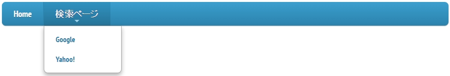

メニューを実装してみましょう。
今回メニューの実装に使うjQueryのプラグインは『SmartMenu』です。
当サイトのメニューの『jQueryについて』→『jQueryプラグイン一部紹介』にも掲載しています。
まずは『SmartMenu』を用意しましょう。
http://www.smartmenus.org/download/へアクセスしてください。
アクセスすると下の画像の通り、1つだけ『
クリックするとファイルのダウンロードが開始されます。
ダウンロードが終わり次第、ZIPファイルを展開し次のファイルだけを取り出しましょう。
まずは下の画像にある
取り出したファイルは次の場所に移しましょう。
『jquery.smartmenus.js』ファイル
『sm-core-css.css』ファイル
『sm-blue.css』ファイル
次に『
$(function() {
$('#main-menu').smartmenus();
});
次に『
<script src="../js/jquery.smartmenus.js"
type="text/javascript">
</script>
<link rel="stylesheet"
type="text/css"
href="../css/sm-core-css.css"/>
<link rel="stylesheet"
type="text/css"
href="../css/sm-blue.css"/>
次に『
今回はこのようなメニューにしようと思います。

<ul id="main-menu" class="sm sm-blue">
<li><a href="Page1.html">Home</a></li>
//メインメニュー『Home』の設定
<li><a href="#">検索ページ</a>
//メインメニュー『検索ページ』の設定
<ul>
<li><a href="https://www.google.co.jp/">
Google</a></li>
//サブメニュー『Google』の設定
<li><a href=".http://www.yahoo.co.jp/">
Yahoo!</a></li>
//サブメニュー『Yahoo!』の設定
</ul>
</li>
</ul>
これでメニューを導入することができました。次の段階へ行ってみましょう！